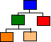
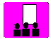
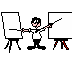

"In the design of large distributed object systems (especially those which use an ORB), it appears that the architecture can often be described by two high-level styles. The first of these is usually referred to as Service-Based and the other could be referred to as Model-Based. The purpose of this workshop is to investigate when, where and how these styles can be usefully applied. "
|  |  |  | |||
|
|
|
|
|
|
|
OT98 Main Web page: 
In the design of large distributed object systems (especially those which use an ORB), it appears that the architecture can often be described by two high-level styles. The first of these is usually referred to as Service-Based and the other could be referred to as Entity-Based (or Model-Based). The purpose of this workshop is to investigate when, where and how these styles can be usefully applied. Specifically, we will consider:
These topics will be investigated by the participants working intensively in small groups on a design problem based on a simple, distributed car-hire system. One half of these groups will adopt a service-based approach while the other half will adopt an entity-based approach. Groups will demonstrate their solutions to all those present. New groups will then be formed combining designers from both approaches to discuss what the strengths and weaknesses are, what opportunities are afforded and what liabilities are introduced.
Participants will:
After the conference the session
leaders will distribute a summary of the workshop process and the main
issues raised to all
 Back to top
Back to top
A system is constructed by directly modelling the processes which occur within the system and then by considering the entities involved in these processes. The model of the processes will allow the architect to collect together sets of coherent functions which can be packaged up into reusable, shared service objects. These objects will also provide the potential distribution boundaries.
 Back to top
Back to top
An object model is constructed without reference to the expected distribution of the objects using techniques such as OMT. This model will tend to focus on the static type diagram allocating the required behaviour to the appropriate object types as required. At a later configuration phase of the project, the distribution of objects is decided.
 Back to top
Back to top
| Time from start | Activity |
|---|---|
| 0.00 | Setup Time and Introductions |
| 0.05 | Opening Presentation |
| 0.15 | Introduction to the problem domain |
| 0.20 | Exercise - designing
within an architectural style
Half of the groups will produce a design for the distributed system within the service-based architectural style, the other half within the model-based style. These designs will be quick-and-dirty, relying on instinct and experience. Initial focus will be on a logial design before moving onto a more physical one. |
| 1.15 | Presentations of Designs |
| 1.30 | Break |
| 2.00 | "SWOT" analysis
New groups will be formed (being made up of people who have been working on the different approaches) to compare the approaches and the relative merits and demerits. |
| 2.45 | Plenary discussion and Summary |
 Back to top
Back to top
 Who
should come?
Who
should come?Attendees to this workshop could be anyone who is interested in the requirements or design of distributed systems using OO technologies. A participant should have a reasonable background knowledge across a wide-range of OO issues such as issues relating to distribution, modelling techniques and ORBs, although in depth knowledge of any one technique, development tool, etc is not expected.
 Back to top
Back to top
Andy Moorley has jointly run successful workshops on subjectivity and 'ORBS and ODBMSs' at OT '96 and '97. Paul Dyson has, with Bruce Anderson, run two successful 'Design variation and architecture' workshops at previous OT conferences. Paul has also presented papers and posters at a number of international conferences including OOPSLA and OOP.
Paul is with Cumulus Systems Ltd., a software house that develops systems for the financial sector. Cumulus is currently designing an integrated front and back office product in a totally OO environment based around an ORB, ODBMS and developed in Smalltalk.
paul@cumulus.co.uk: Cumulus Systems Ltd., 1 High Street, Rickmansworth, Herts. WD3 1ET, UK. Tel: +44.1923.720477Andy is now with JP Morgan (London) where he is working on an OO Derivatives Risk Management system based on Smalltalk, ODBMS and ORB technology. He has both architectural and development roles in this project.
moorley_andy@jpmorgan.com: JP Morgan ,PO Box 161, 60 Victoria Embankment, London. EC4Y 0JP, UK. Tel: +44.171.353.8658.The architecture of both of these system has adopted facets of both approaches.
 Back to top
Back to top